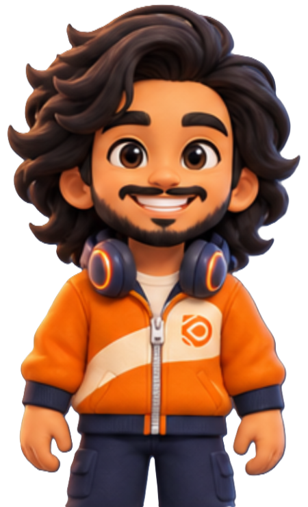

01 / Cut · Colour · Sound
Video Editing
Story-first edits, graded and mixed so every frame earns its place.
We are a hybrid crew where code, cameras and creativity share one desk. We ship software that scales, capture the world from four hundred feet up, and turn attention into momentum.
Our Journey
Hover a craft to see it in motion. DAW has opinions about every one of them.
From the first line of code to the final colour grade, every piece is designed, built and finished in-house.
Keep scrollingStory-first edits, graded and mixed so every frame earns its place.
Logos, products and characters that move with weight and intent.
Fast, interactive sites people remember, built to scale.
Brand films and commercials, lit and shot with care.
Licensed aerials and FPV flythroughs, planned to the metre.
Every frame is
a decision.
Made to be felt.